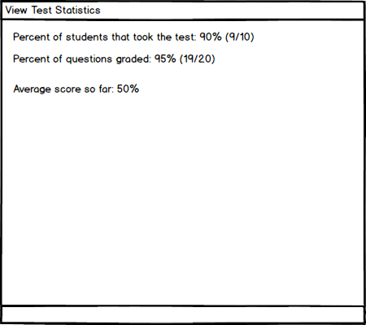

2.5.2. Viewing Statistics about Published Test
To view statistics about a specific published test, the user clicks the button Stats on a specific published test from the list of published tests as shown in section 2.5.1. The system displays the View Statistics Menu. Figure 1 illustrates this.
View Statistics Menu

Figure 1: PICTURE OF VIEW STATISTICS MENU
This menu shows the percentage of users that were assigned the test that already took it as well as the exact amount.
This menu also shows the percentage and amount of questions that have already been graded out of the total amount of questions.
This menu also shows the average percentage score out of the graded questions of all students. For example if two students were assigned the test and one student has only 1 question graded out of 10 and got all the points for that question while the other is fully graded with all possible points, the average would be 100% because both students have 100% of graded points.